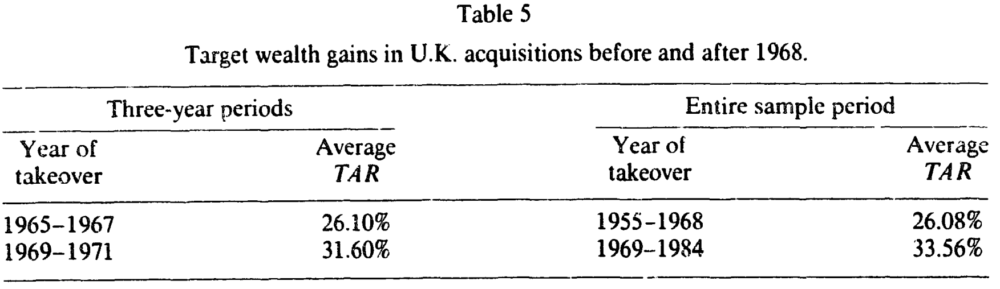
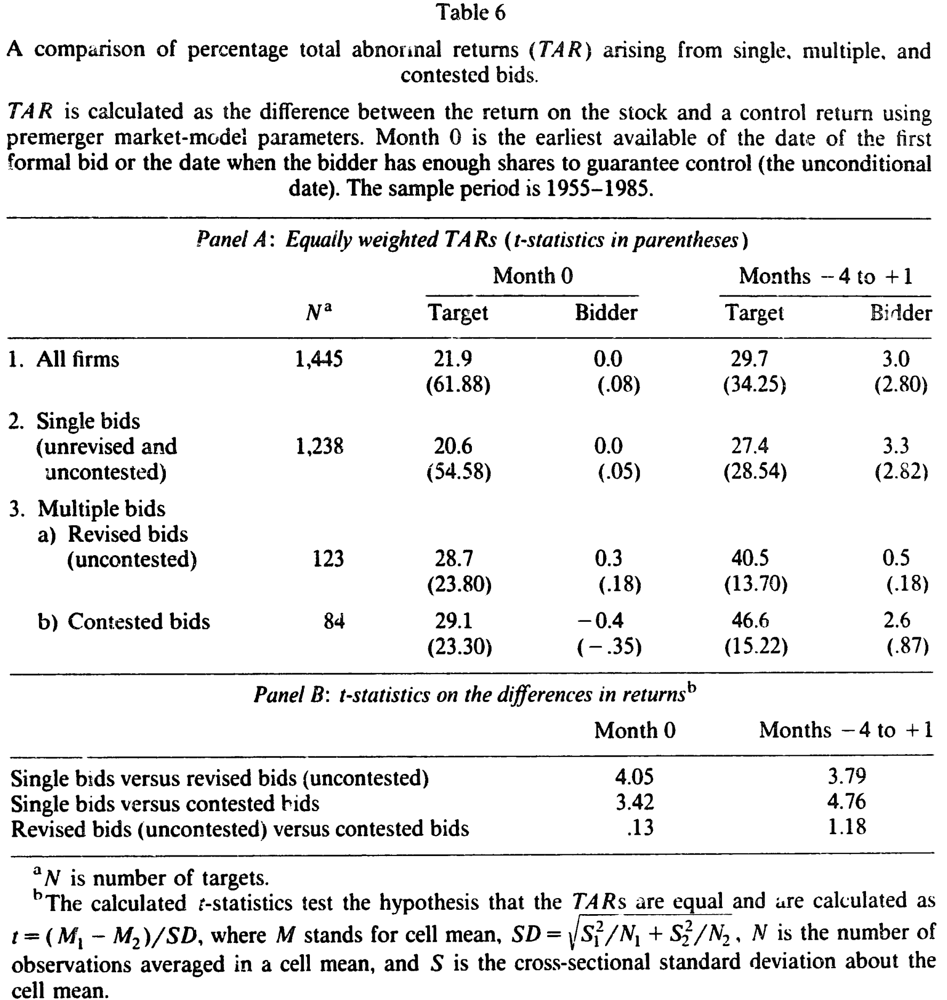
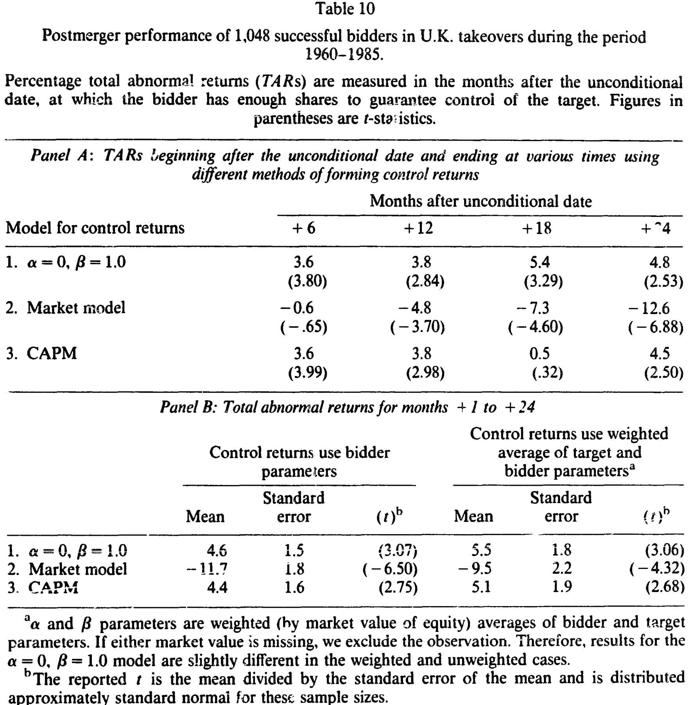
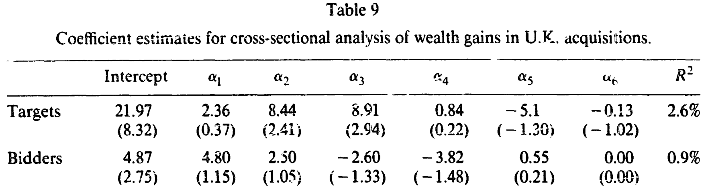
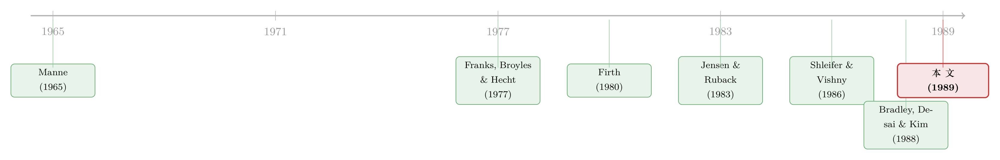

目标公司拿走了一切，可那场涨价真是法律的功劳吗？
本文读的是 Franks & Harris (1989, JFE)：用 1955–1985 年间 1,800 多桩英国收购，作者发现目标公司股东在并购公告前后能拿走 25%–30% 的异常收益，而收购方只赚到接近零或微薄的回报。最巧妙的一笔，是用「没有威廉姆斯法案的英国」做对照组——英国目标公司的溢价在 1968 年后【同样】上升了，于是美国学界把溢价上涨归功于威廉姆斯法案的说法，被釜底抽薪。
1 一个被太快接受的因果
先讲一个在美国并购研究里几乎被当成常识的故事。
1968 年，美国通过了 威廉姆斯法案 (Williams Act)，它要求现金 要约收购 (tender offer) 必须强制披露、必须留足时间窗口——后来的修订甚至规定要约至少要开放 20 个交易日，每次加价后还要再多挂 10 天。直觉上，这些规定拉长了收购的过程，给了第三方竞争者进场的时间，于是收购市场变得更有竞争性，目标公司股东能谈到更高的价。Jarrell 与 Bradley (1980)、Bradley、Desai 与 Kim (1988) 都报告说：1968 年之后，美国目标公司的收购溢价确实上去了，收购方的收益反而被压低了。
故事讲到这里，逻辑闭合得很漂亮：一部法律 → 更激烈的竞争 → 更高的目标溢价。
但真正做实证的人应该在这里停一下，问一句最朴素的话：你怎么知道这是威廉姆斯法案干的？ 1968 年前后，世界并不只有这一件事在变。利率、监管气候、并购浪潮、信息披露的整体风气——它们都在动。把「1968 年后溢价上升」这件事单独挂到一部法律头上，本质上是一个【没有对照组】的断言。
这正是 Franks 和 Harris 这篇 1989 年论文的切入点。他们手里握着一个近乎完美的对照组：英国。
2 把英国当成一台天然的对照实验
英国和美国一样，有活跃的公开股票市场、有竞争性的公司控制权市场；但英国没有威廉姆斯法案。如果「1968 年后目标溢价上升」是威廉姆斯法案这种美国特有的立法造成的，那么在没有这部法律的英国，溢价就不该出现同样的跳升;反过来，如果英国的溢价也在 1968 年后上去了，那增长的真正推手就只能是某种跨国共有的东西——而不是那部法律。
这就是这篇论文的核心招法：用制度差异做识别。两国结果若一致，说明公司控制权市场对具体的制度细节是稳健的;两国结果若不同，差异本身就指向了制度。作者把这套逻辑反复用在好几个美国争论上——要约收购 vs. 合并的溢价差、威廉姆斯法案、修订与竞争性竞标、立足点持股 (toehold)，以及收购方并购后的股价表现。
接着，一个自然的问题是：靠什么把「财富效应」量出来？
3 三把尺子，和一个躲开「幸存者」的累计法
样本来自 伦敦股价数据库 (London Share Price Database, LSPD)：初始包含 1,898 家目标公司和 1,058 家收购方，覆盖 1955 年 1 月到 1985 年 6 月;因股价数据缺失，可用的目标样本收缩到 1,314 家。观测单位是「每桩收购里的公司」，收益是基于做市商报价的月度收益率。
方法是标准的 事件研究 (event study)。某公司 \(j\) 在 \(t\) 月的 异常收益 (abnormal return) 定义为其实际收益减去一个「控制收益」\(c_{jt}\)——也就是「假如没有并购，它本该有的收益」。作者特意用了三种控制模型，看结论稳不稳：
三把尺子分别是：市场模型 \(c_{jt}=\alpha_j+\beta_j r_{mt}\)（用并购前 60 个月估计 \(\alpha,\beta\)）;最简模型 \(\alpha=0,\beta=1\)（控制收益干脆就等于等权市场组合收益）;以及 资本资产定价模型 (CAPM) \(c_{jt}=r_{ft}+\beta_j(r_{mt}-r_{ft})\)。Brown 与 Warner (1980, 1985) 的模拟早就提醒过：在很多场合，越简单的方法其实和复杂方法一样有力。这一点会在最后那个「并购后魔咒」里成为关键。
但真正讲究的一步在于怎么累加。公司会因为停牌、退市、被吞并而中途从样本里消失;如果每个月都对「当月还活着的公司」横截面取平均再相加，幸存的偏差会污染长期结果。作者于是先对每家公司把它自己观测到的月度异常收益累加成一条「总异常收益」(total abnormal return, TAR)，再跨公司平均：
$$ TAR_t = \frac{1}{N}\sum_{j=1}^{N}\left(\sum_{\tau=t_0}^{t} ar_{j\tau}\right) $$
举个论文里的例子：若 +1 月有两家公司平均残差 10%，+2 月只剩一家、残差 5%，按这个口径两个月的 TAR 是 12.5%，而不是「每月横截面平均再相加」得到的 15%。差别看似细微，到了长达两年的并购后窗口，就是「负 12.6% 还是正 4.8%」的天壤之别。
4 目标拿走了一切
先看整体（论文表 2，全样本、最简模型、价值加权）。在并购公告月（month 0），目标公司平均拿到 23.3% 的异常收益（t 高达 60.6，85% 为正），收购方只有 1.0%。把窗口放宽到公告前四个月到后一个月（months −4 to +1），目标的 TAR 是 29.7%（等权）或 25.8%（价值加权），收购方则是 7.9%（等权）/ 2.4%（价值加权）。
这里藏着一个值得停下来的细节：价值加权下目标收益更低，说明小目标拿到的百分比溢价更高。而收购方平均比目标大了八倍——目标平均市值 £14.05 百万，收购方 £107.91 百万——所以哪怕收购方真有几个百分点的异常收益，分母一大，对它自己股价的「绝对」影响也很有限。（关于「百分比」和「绝对金额」在并购里如何讲出两个相反的故事，可参见《赚了 1.1%，却亏掉 3030 亿》。）
于是结论的第一层很清楚：在英国，并购创造的价值，几乎全部流进了目标公司股东的口袋。这和美国的图景高度一致——Jensen 与 Ruback (1983) 综述的美国数字是目标在要约里约 29%、合并里约 16%，收购方在要约里约 4%、合并里约 0%。
然后，关键的一步来了。
5 反转：那场涨价的功劳，另有其人
如果威廉姆斯法案真是美国目标溢价上升的原因，那没有这部法律的英国就该「按兵不动」。可数据说了相反的话。
把英国目标公司的财富收益按 1968 年前后切开（论文表 5），无论用三年子区间还是用全样本，溢价都在 1968 年之后明显上了一个台阶：1965–67 年是 26.10%，到 1969–71 年升到 31.60%;若按全样本，1955–68 年是 26.08%，1969–84 年则是 33.56%。而英国在这段时间里唯一像样的监管变化，只是披露立足点持股规则的一点小修订——作者直言，这点改动不可能显著提高收购市场的竞争性。

Table 5
这就是全文最漂亮的一记反转：英国目标溢价的上升和美国几乎同步发生，却没有一部威廉姆斯法案在背后推。于是「1968 年后美国溢价上升是威廉姆斯法案的功劳」这一断言，被一个干净的对照组直接架空了——真正的推手，更可能是某种跨国共有的力量（并购技术、市场风气、竞争程度的整体变迁），而不是那部具体的法律。
值得一提的是，要约收购确实比其他形式更慷慨：在英国，要约下目标月度异常收益 24.0%，远高于「其他形式」（主要是英国特有的安排方案, scheme of arrangement）的 14.8%（差异 t = 7.23）;收购方在要约里也是正的 1.2%，而在其他形式里是 −3.6%（差异 t = 2.95）。这与美国「要约比合并更值钱」的发现一致。但请注意——要约更慷慨，和「威廉姆斯法案造成了涨价」是两回事。
6 抢出来的溢价
既然竞争是关键，那就直接去看竞争最激烈的地方。论文把竞标按「单一、修订、竞争性」分层（表 6）。
结果干净利落：单一（未修订、未竞争）竞标里目标月度收益只有 20.6%，而一旦出现竞争性竞标，月度收益升到 29.1%，六个月窗口（−4 to +1）更是高达 46.6%;修订但未竞争的竞标也有 40.5%。单一竞标 vs. 竞争性竞标的差异，t 值在月度是 3.42、在六个月窗口是 4.76，扎实显著。

Table 6
这条证据其实是上一节反转的「正面印证」：把目标溢价推高的，是竞争本身——是否有第二个、第三个竞标者进场。法律也好、制度也好，只有当它们能改变竞争的烈度时才会影响溢价;而 1968 年前后那点英国式的小修订，显然没这个本事。
至于立足点持股，作者也顺手检验了 Shleifer 与 Vishny (1986) 的命题——「立足点越大，竞价溢价越低」。证据是温和的支持：当立足点超过 30% 时目标收益（28.6%）确实略低于有小额立足点（38.3%）的情形;而小额立足点往往是收购方为一场预期中的竞争性竞标所做的准备——有 27% 的小额立足点案例伴随多轮竞标，而无立足点的只有 15%。
7 并购后的「魔咒」，是真衰退还是尺子歪了？
现在轮到那个最让美国学界头疼的谜题。Jensen 与 Ruback 曾指出一个「令人困惑」的结果：成功收购方在并购完成后，股价会系统性地下跌——Langetieg (1978)、Asquith (1983) 都报告了并购后一年的显著负异常收益。这像是在说：市场一开始高估了并购，事后才慢慢醒悟。
英国数据给了这个谜题一个绝佳的独立复制机会。作者追踪了 1,048 家成功收购方在 unconditional 日之后的两年表现（表 10）。

Table 10
魔鬼藏在「用哪把尺子」里。用最简模型（\(\alpha=0,\beta=1\)），并购后 24 个月的 TAR 是 正的 4.8%（t = 2.53）;用 CAPM 也是正的 4.5%。可一旦换上市场模型（用并购前估计的 \(\alpha,\beta\)），同一批公司、同一段时间，结果立刻翻成 −12.6%（t = −6.88）。
为什么会这样？因为收购方在并购前往往刚经历过一段股价表现极好的时期——它们的并购前 \(\alpha\) 和 \(\beta\) 都被估得偏高。用这套「偏高」的并购前参数去构造控制收益，就会人为地制造出一段向下的漂移。换句话说，那个所谓的「并购后下跌」，很可能不是收购方真的变差了，而是控制收益被设得太高——是尺子的刻度错了，不是被量的东西缩水了。作者还检验了一个更实在的解释：收购方常常挑在自己股价表现强劲时出手（这也呼应了 Jensen 关于 自由现金流 (free cash flow) 的论述，见《现金为什么一定要「还」出去》）。即便把目标和收购方的并购前参数按市值加权平均、以反映合并后的「组合」效应，结论也没有实质改变（−9.5% vs. −11.7%）。
这正是论文摘要里那句话的来历：并购后的股价表现，提示收购方是在自身股价的有利发展之后才出手收购的。这一对「并购后负收益是统计假象」的怀疑，与后续专门重审这一问题的工作一脉相承（可参见《并购方跑输的那几年，错的不是公司，是尺子》）。
8 把所有故事一次性对质
零散的分层结果有个隐患：变量之间会互相纠缠。比如「安排方案的目标收益低」，到底是因为它是安排方案，还是因为这类交易恰好都没有竞争、又恰好都发生在 1968 年之前？于是作者用 721 对目标—收购方做了一次 横截面回归 (cross-sectional regression)，把交易形式、是否多轮竞标、是否 1968 年后、立足点、相对规模一并放进去：
$$ tar_i = \beta_0 + \beta_1 a_{1i} + \beta_2 a_{2i} + \beta_3 a_{3i} + \beta_4 a_{4i} + \beta_5 a_{5i} + \beta_6 a_{6i} + u_i $$
其中 \(a_1\) 标记交易形式，\(a_2\) 标记多轮竞标，\(a_3\) 标记 1968 年后，\(a_4,a_5\) 标记立足点档位，\(a_6\) 是目标对收购方的相对规模。

Table 9
对目标公司而言（表 9），在控制其他变量后，只有两个系数显著：多轮竞标 \(a_2\) 的系数 8.44（t = 2.41），以及「1968 年后」\(a_3\) 的系数 8.91（t = 2.94）。这一结果做了两件事：第一，它确认了竞争（多轮竞标）是溢价的真实驱动力;第二，「安排方案目标收益低」原来主要是因为这类交易没有竞争、且多发生在 1968 年之前——一旦控制住这些，形式本身就不再重要。更关键的是，「1968 年后」的正系数在控制了竞争之后依然存在且显著，再次说明：把溢价上升完全归给某部法律，是讲不通的。对收购方而言，所有系数都不显著（\(R^2\) 仅 0.9%），与前面「收购方收益接近零」的图景完全一致。
9 文献脉络
这条研究的源头是 Manne (1965) 那个经典命题——并购是公司控制权市场在运作，是创造价值的活动;与之对立的是 Mueller (1969) 的管理者理论，把并购看成经理人扩张个人帝国的工具。两种理论的裁决权，交给了实证。
美国这边，Halpern (1973)、Mandelker (1974)、Asquith (1983)、Bradley、Desai 与 Kim (1988) 一路积累，大体支持「成功收购创造价值、且价值多归目标」;也有 Malatesta (1983)、Roll (1986，著名的 hubris 假说) 提出异议。Jensen 与 Ruback (1983) 的综述则成了那个时代的「公认结论」。

英国这边却一直吵个不停。Franks、Broyles 与 Hecht (1977) 只看了 74 桩酿酒业收购，发现目标获益、收购方无损;Firth (1979, 1980) 用更大的样本却得到几乎相反的结论——目标的收益被收购方的损失抵消殆尽，于是断言并购「多半出于经理人效用最大化」;Barnes (1984)、Dodds 与 Quek (1985) 的小样本则把争论搅得更乱。Franks 与 Harris 这篇论文的位置，就是用一个 1,800 多桩、跨 30 年的「详尽」样本，去终结这场英国内部的混战——他们坦言，自己复制 Firth 1969–1975 区间后得到的收购方收益是正的，与 Firth 的负收益相左，差异很可能源于 Firth 较小的样本和那个年代 LSPD 对大公司的覆盖偏差。
10 评论与延伸（Q&A + 研究方向）
(a) 几个可能的疑问
Q：样本里只有成功的并购、没有失败的竞标，会不会有选择偏差？
会，作者也承认。LSPD 不记录失败竞标，于是投资者其实是在不知结局的情况下买入。但偏差方向取决于失败竞标的性质：若公告期的股价上涨源于对真实资产重组的预期，那竞标失败后应当回吐;若上涨只是收购方私有信息的揭示、不需要任何运营改变，那信息一旦公开，竞标失败也不会回吐。方向不定，所以不能简单断言结论被高估。
Q：「目标拿走一切」是不是只是因为收购方太大、百分比被分母稀释了？
部分是。收购方平均比目标大八倍，所以即便它有几个点的异常收益，对自身股价的绝对影响也小。但价值加权后收购方六个月仍有显著为正的 2.4%，说明收购方并非「零」，只是「小而正」——这与「收购方被严重坑害」的管理者理论不符。
Q：那个「并购后负收益」到底是真的还是假的？
论文的立场是：高度可疑。同一批公司，换最简模型或 CAPM 是正收益，换市场模型才变成 −12.6%。差别完全来自控制收益的设定——收购方并购前股价表现好、\(\alpha,\beta\) 被估偏高，用它构造的基准会人为造出向下漂移。所以更可能是「尺子歪了」，而非公司真的变差。
Q：用 1968 年前后做对照，前提是「除了威廉姆斯法案，两国别的都一样」，这成立吗？
严格说不成立，这正是识别上最大的软肋。论文的论证是「英国没有同类立法、却出现同样的溢价上升」，因此把上升完全归给该法案讲不通;但它没有完全排除两国其他制度差异恰好抵消或叠加的可能。它能证伪「法案是唯一原因」，却难以正面识别真正的原因是什么。
Q：要约收购比安排方案更慷慨，是不是说明交易形式本身很重要？
横截面回归给了更细的答案：一旦控制住「是否有竞争」和「是否 1968 年后」，交易形式本身就不再显著。所以「安排方案目标收益低」更多是因为这类交易缺乏竞争、且多在早期发生，而非形式本身的因果效应。
Q：立足点持股的证据为什么只是「温和支持」Shleifer-Vishny？
因为符号对、但量级和显著性都不强：立足点超过 30% 时目标收益略低，方向符合「立足点越大溢价越低」的命题。但作者也指出，他们的口径可能低估了立足点收购的真实收益——若部分目标收益发生在立足点建仓时（远早于 month 0），而收购要约文件又不披露建仓日期，那这部分就被漏掉了。
(b) 几个可能的研究问题与提案
1. 用债券持有人的视角重做这套「跨国对照」。 【经济故事】这篇论文只看股东。但并购对债权人的财富效应（财富在股债之间的再分配、事件风险）同样关键，且英美在债券契约、事件风险条款上的制度差异更大，是更干净的对照。【可行性】中。需要英国公司债的二级市场价格——这是难点，历史英国公司债流动性数据稀缺;美国一侧可用 TRACE，识别策略可沿用「制度差异 + 事件研究」。
2. 把「外资收购方」单独拎出来检验溢价与并购后表现。 【经济故事】跨境收购方可能有信息劣势、也可能有协同或避税动机，其溢价和并购后漂移是否系统性不同？这能呼应「外资是不是更高出价」的老争论。【可行性】高。LSPD/Compustat + SDC 可识别收购方国籍，事件研究方法现成;难点在于控制行业与时期的混杂（已有研究提醒「外资 vs. 本土」常被行业搅浑）。
3. 直接攻「并购后负收益」的尺子问题。 【经济故事】本文已暗示负收益是控制收益设定的产物。可用现代的条件 beta / 因子模型，系统量化「并购前参数偏高」到底贡献了多少所谓的负漂移。【可行性】高。需要长样本收购方收益 + 多种基准模型，纯方法论检验，doable;关键是构造一个不依赖并购前参数的「干净」基准。
4. 把「竞争烈度」做成连续变量来定价溢价。 【经济故事】本文用「单一/修订/竞争性」的离散分层显示竞争推高溢价。若能用竞标者数量、竞价轮次、潜在竞争者的进入威胁构造连续的竞争度量，就能更精细地估计「竞争的边际价格」。【可行性】中。需要逐桩交易的竞标过程数据（竞标者数、加价次数），可从收购要约文件或新闻档案手工编码，工作量大但可行。
参考文献
- Asquith, P. (1983). Merger bids, uncertainty, and stockholder returns. Journal of Financial Economics 11(1–4), 51–83.
- Bradley, M., Desai, A., & Kim, E. H. (1988). Synergistic gains from corporate acquisitions and their division between the stockholders of target and acquiring firms. Journal of Financial Economics 21(1), 3–40.
- Brown, S. J., & Warner, J. B. (1980). Measuring security price performance. Journal of Financial Economics 8(3), 205–258.
- Brown, S. J., & Warner, J. B. (1985). Using daily stock returns: The case of event studies. Journal of Financial Economics 14(1), 3–31.
- Firth, M. (1980). Takeovers, shareholder returns, and the theory of the firm. Quarterly Journal of Economics 94(2), 235–260.
- Franks, J. R., Broyles, J. E., & Hecht, M. J. (1977). An industry study of the profitability of mergers in the United Kingdom. Journal of Finance 32(5), 1513–1525.
- Grossman, S. J., & Hart, O. D. (1980). Takeover bids, the free-rider problem, and the theory of the corporation. Bell Journal of Economics 11(1), 42–64.
- Jensen, M. C., & Ruback, R. S. (1983). The market for corporate control: The scientific evidence. Journal of Financial Economics 11(1–4), 5–50.
- Langetieg, T. C. (1978). An application of a three-factor performance index to measure stockholder gains from merger. Journal of Financial Economics 6(4), 365–383.
- Malatesta, P. H. (1983). The wealth effect of merger activity and the objective functions of merging firms. Journal of Financial Economics 11(1–4), 155–181.
- Mandelker, G. (1974). Risk and return: The case of merging firms. Journal of Financial Economics 1(4), 303–335.
- Manne, H. G. (1965). Mergers and the market for corporate control. Journal of Political Economy 73(2), 110–120.
- Mueller, D. C. (1969). A theory of conglomerate mergers. Quarterly Journal of Economics 83(4), 643–659.
- Roll, R. (1986). The hubris hypothesis of corporate takeovers. Journal of Business 59(2), 197–216.
- Shleifer, A., & Vishny, R. W. (1986). Large shareholders and corporate control. Journal of Political Economy 94(3), 461–488.